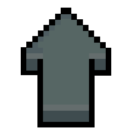

CELESTE - Jogo Eletrônico
Início
Celeste (Switch) é um jogo de plataforma desenvolvido pelos criadores canad Maddy Thorson e Noel Berry, com arte produzida pelo estúdio brasileiro MiniBoss.
Inicialmente concebido como um protótipo deatro dias durante uma game jam, o jogo foi posteriormente expandido para seu lançamento completo. Lançado em janeiro de 2018, Celeste está disponível para Microsoft Windows, Nintendo Switch, PlayStation 4, One, macOS e Linux. Recebendo aclamação da crítica, o jogo foi premiado como "Melhor Jogo Independente e "Jogo Mais Impactante" no The Game Awards 2018, além de ter sido indicado para "Jogo do Ano" e "Melhor Trilha Sonora" na mesma premiação.

Desenvolvimento e lançamento
O desenvolvimento e lançamento de Celeste foram liderados por Noel Berry (Skytorn) e Maddy Thorson (TowerFall), que criaram um protótipo do jogo em apenas quatro dias durante um evento chamado "Celeste Classic".
O resultado foi um desafiador jogo de plataforma com 30 níveis projetado para o console Pico-8, com foco na precisão dos reflexos dos speedrunners. A semelhança do jogo com TowerFall de Thorson foi observada pela Kill Screen, destacando a inspiração nos jogos anteriores do desenvolvedor e em Super Mario Maker. Berry e Thorson também se inspiraram na dificuldade dos jogos de plataformas da era do Super Nintendo.
O jogo foi então expandido para incluir mais de 200 quartos distribuídos em oito capítulos, com parte do desenvolvimento transmitido na Twitch. Celeste foi desenvolvido durante a "PAX West Indie Megabooth" de 2016 e lançado para várias plataformas, como o Nintendo Switch, PlayStation 4, Xbox One, Windows, Linux e MacOS, em 25 de janeiro de 2018. Incluído no jogo está o protótipo original para o console Pico-8 como um minigame desbloqueável.
História
A trama acompanha a história de Madeline, uma jovem que decidiu, num ato imprudente, subir ao topo da Montanha Celestial apenas para provar a si mesma que conseguiria. No árduo caminho até o topo, a protagonista descobre que deverá enfrentar seu maior inimigo: literalmente ela mesma. Madeline é uma pessoa comum como todas as outras. Está cheio de emoções com as quais muitos podem se identificar.
 À medida que a trama se desenrola, o jogador acaba descobrindo um pouco mais sobre as motivações e problemas da garota. Ansiedade, depressão, insegurança, ataques de pânico... Como se não bastasse essa
avalanche de infortúnios, os poderes místicos da Montanha Celestial acabaram entrando em contato com a negatividade de Madeline, causando assim a criação de um “clone maligno” da garota. Como você pode
ver, a história aborda alguns temas extremamente sutis no desenvolvimento da personagem de Madeline. Embora seja um assunto difícil de abordar com maestria, a narrativa de Celeste consegue expandir todas
essas questões de forma tão sensível e emocional que são inúmeros os relatos de pessoas online que se inspiram no jogo para melhorar suas respectivas condições.
À medida que a trama se desenrola, o jogador acaba descobrindo um pouco mais sobre as motivações e problemas da garota. Ansiedade, depressão, insegurança, ataques de pânico... Como se não bastasse essa
avalanche de infortúnios, os poderes místicos da Montanha Celestial acabaram entrando em contato com a negatividade de Madeline, causando assim a criação de um “clone maligno” da garota. Como você pode
ver, a história aborda alguns temas extremamente sutis no desenvolvimento da personagem de Madeline. Embora seja um assunto difícil de abordar com maestria, a narrativa de Celeste consegue expandir todas
essas questões de forma tão sensível e emocional que são inúmeros os relatos de pessoas online que se inspiram no jogo para melhorar suas respectivas condições.
Aceite seus medos, falhas e inseguranças. Celeste é uma história comovente de autodescoberta e superação pessoal. Mesmo com a óbvia camada de fantasia, tudo no jogo é tão “humano” que pode fazer qualquer um chorar. Não é uma grande trama digna de Oscar, mas é algo que é feito com tanto cuidado e delicadeza que fica difícil alguém que já passou por tais problemas não se apaixonar pela história e pelo pequeno mundo deste incrível jogo de bolo de aventura.
Jogabilidade
Celeste é um jogo de plataforma onde os jogadores assumem o controle de Madeline, uma garota que escala uma montanha, enfrentando obstáculos mortais. Madeline pode pular, escalar paredes por um tempo limitado e realizar um traço (dash) em oito direções diferentes. Este movimento pode ser feito apenas uma vez e precisa ser recarregado, aterrissando ou atingir certos objetos, como cristais. Durante o jogo, o jogador encontra mecânicas adicionais, como molas e penas que permitem voar brevemente, além de obstáculos mortais como espinhos que matam Madeline, levando-a de volta ao início da fase.
 Há uma opção de "Modo de Assistência" para aqueles menos habilidosos, onde é possível ajustar atributos da física do jogo como traços aéreos infinitos, invencibilidade e diminuir a velocidade do jogo.
Há uma opção de "Modo de Assistência" para aqueles menos habilidosos, onde é possível ajustar atributos da física do jogo como traços aéreos infinitos, invencibilidade e diminuir a velocidade do jogo.
Morangos opcionais escondidos em cada nível afetam levemente o final do jogo dependendo da quantidade coletada. Também, existem fitas cassetes que desbloqueiam variações mais difíceis de "B-Side" de certos níveis, e corações de cristal usados para acessar o conteúdo pós-jogo. Vencendo todos os "B-Sides", em seguida, desbloqueia as versões "C-Side", que consiste em muito duras, mas pequenas variações sobre os níveis. Ao limpar todos os "C-Sides", o jogador pode acessar o menu Variantes. O menu Variantes permite que os jogadores alterem a física do jogo de maneira similar ao Modo de Assistência. Algumas dessas configurações "variantes" incluem: acelerar o jogo, 360 graus e baixa fricção em todas as superfícies planas. Essas configurações servem para tornar o jogo mais desafiador ou mais divertido.
Ajustabilidade do jogo
Celeste se destaca na indústria de jogos por oferecer opções abrangentes para ajustar sua acessibilidade de acordo com as preferências de cada jogador. O jogo proporciona todas as ferramentas necessárias para que qualquer pessoa possa desfrutar da aventura da melhor forma, seja casual, speedrunner, colecionador, amante da dificuldade, ou até mesmo portador de deficiências motoras ou visuais. Celeste se adapta para abraçar o jogador de todas as maneiras possíveis.
Para um jogo independente de seu porte, Celeste oferece uma abundância de conteúdo para explorar. Os colecionáveis extras permitem horas de diversão, enquanto cada capítulo apresenta três "lados" diferentes
que modificam drasticamente os desafios. O jogo também incentiva a competição de velocidade entre amigos para ver quem consegue completar as fases mais rapidamente. 
O visual do jogo é maravilhosamente construído em pixel art. Os cenários e personagens podem parecer simples se comparados a outros títulos, mas emanam um carisma impressionante em cada animação. A arte do jogo contribui de forma essencial para alternar perfeitamente entre ambientes coloridos e melancólicos, acompanhando o clima emocional da narrativa.
A atmosfera "íntima" de Celeste está em total harmonia com sua trilha sonora envolvente. As músicas variam entre composições épicas, melancólicas, frenéticas e reconfortantes, proporcionando uma experiência auditiva cativante. Os efeitos sonoros, por sua vez, são satisfatórios e memoráveis, contribuindo para a imersão do jogador no universo do jogo.

Última data de modificação: 21/06/2024 Último horário de modificação: 18:01